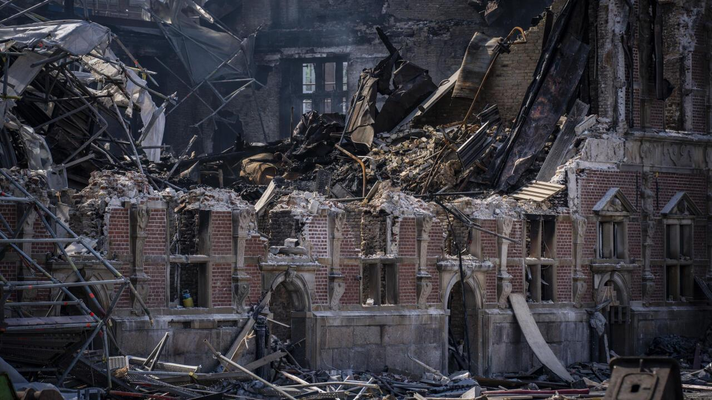

Chokerende Terrorangreb Ryster Amalienborg Kongehuset i Oprør!
Tidligt i morges blev Amalienborg ramt af et chokerende terrorangreb, der har sat hele Danmark i alarmberedskab. Ifølge øjenvidner udbrød der kaos, da ukendte gerningsmænd udførte et koordineret angreb mod kongefamiliens residens.
Hændelsesforløbet
Ifølge øjenvidner begyndte angrebet omkring kl. [tidspunkt], da en eller flere gerningsmænd forsøgte at trænge ind på slotspladsen. Politiet reagerede hurtigt, og der opstod en voldsom konfrontation, hvor skud blev affyret. Københavns Politi har bekræftet, at flere personer er blevet såret, herunder mindst én betjent. Der er endnu ingen meldinger om dødsfald, men situationen betegnes som alvorlig.
"Jeg hørte en række høje brag og så mennesker løbe i panik. Det var som noget fra en actionfilm." - udtaler et øjenvidne.
Ifølge Københavns Politi blev flere skud affyret nær slotspladsen, og bevæbnede styrker blev hurtigt sat ind for at sikre området. Det vides endnu ikke, om angrebet havde et specifikt mål inden for kongehuset, men sikkerheden er blevet markant skærpet.
En turist, der befandt sig i nærheden, fortæller: "Jeg troede først, det var fyrværkeri, men da jeg så folk løbe væk i frygt, vidste jeg, at noget var helt galt."
 Eksperter mener, at angrebet kan have forbindelse til en større international terrororganisation. "Vi ser ofte, at sådanne angreb er nøje planlagt og har et politisk eller ideologisk motiv. Dette kan være en del af en bredere strategi mod vestlige institutioner," siger sikkerhedsekspert Henrik Madsen.
Regeringen har udsendt en erklæring, hvor statsministeren fordømmer angrebet som en "fej og utilgivelig handling mod demokratiet og vores værdier". Samtidig har efterretningstjenesten iværksat en omfattende undersøgelse for at afdække eventuelle terrorforbindelser.
Kongehuset har endnu ikke kommenteret hændelsen officielt, men ifølge kilder tæt på hoffet er Dronningen "dybt rystet". Det forventes, at der vil blive afholdt en pressekonference senere i dag.
Efterforskningen fortsætter
Politiet opfordrer befolkningen til at holde sig væk fra området og melde sig, hvis de har oplysninger, der kan hjælpe efterforskningen. Samtidig opfordres borgere til at bevare roen og følge myndighedernes anvisninger. Vi opdaterer løbende med nye oplysninger.